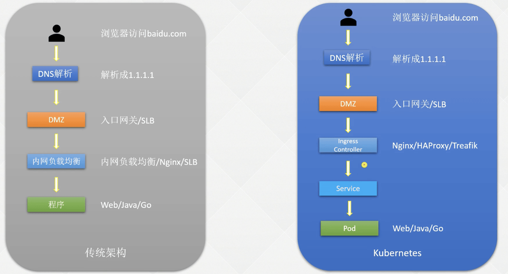

k8s 基础篇-服务发布
- TAGS: Kubernetes
k8s基础篇-服务发布
在 k8s 上是如何发布服务的
传统架构服务发布方式
在裸机或者虚拟机上部署服务之后，前面会加代理层如 Nginx 或者 slb。
服务间访问东西流量、服务外访问是南北流量
k8s 服务发布方式
通过 ingress controller 访问到服务Servcie，内部访问使用 Service name。
Label && Selector
Label：Label（标签）可以对 k8s 的一些对象，如 Pod 和节点进行"分组"。通过添加 `key=value` 格式的标签，用于区分同样资源的不同的分组。
Selector：Selector（标签选择器）可以通过根据资源的标签查询出精确对象的信息。
如何定义Label
应用案例：
公司与xx银行有一条专属的高速光纤通道，此通道只能与192.168.7.0网段进行通信，因此只能将与xx银行通信的应用部署到192.168.7.0网段所在的节点上，此时可以对节点进行Label（即加标签）：
给k8s-node02节点打标签
[root@k8s-master01 ~]# kubectl label node k8s-node02 region=subnet7 node/k8s-node02 labeled # 查找刚刚打标签的节点，通过Selector对其筛选 [root@k8s-master01 ~]# kubectl get no -l region=subnet7 NAME STATUS ROLES AGE VERSION k8s-node02 Ready <none> 44h v1.20.0 # 最后，在Deployment或其他控制器中指定将Pod部署到该节点： containers: ...... dnsPolicy: ClusterFirst nodeSelector: region: subnet7 # 指定刚刚我们打的标签 restartPolicy: Always ......
也可以用同样的方式对Service进行Label
[root@k8s-master01 ~]# kubectl label svc canary-v1 -n canary-production env=canary version=v1 service/canary-v1 labeled # 查看Labels： [root@k8s-master01 ~]# kubectl get svc -n canary-production --show-labels # 还可以查看所有Version为v1的svc kubectl get svc --all-namespaces -l version=v1
其他资源的Label方式相同
Selector条件匹配
Selector主要用于资源的匹配，只有符合条件的资源才会被调用或使用，可以使用该方式对集群中的各类资源进行分配。
# 假如对Selector进行条件匹配，目前已有的Label如下 [root@k8s-master01 ~]# kubectl get no --show-labels NAME STATUS ROLES AGE VERSION LABELS k8s-master01 Ready matser 44h v1.20.0 beta.kubernetes.io/arch=amd64,beta.kubernetes.io/os=linux,kubernetes.io/arch=amd64,kubernetes.io/hostname=k8s-master01,kubernetes.io/os=linux,node-role.kubernetes.io/matser=,node.kubernetes.io/node= k8s-master02 Ready <none> 44h v1.20.0 beta.kubernetes.io/arch=amd64,beta.kubernetes.io/os=linux,kubernetes.io/arch=amd64,kubernetes.io/hostname=k8s-master02,kubernetes.io/os=linux,node.kubernetes.io/node= k8s-master03 Ready <none> 44h v1.20.0 beta.kubernetes.io/arch=amd64,beta.kubernetes.io/os=linux,kubernetes.io/arch=amd64,kubernetes.io/hostname=k8s-master03,kubernetes.io/os=linux,node.kubernetes.io/node= k8s-node01 Ready <none> 44h v1.20.0 beta.kubernetes.io/arch=amd64,beta.kubernetes.io/os=linux,kubernetes.io/arch=amd64,kubernetes.io/hostname=k8s-node01,kubernetes.io/os=linux,node.kubernetes.io/node= k8s-node02 Ready <none> 44h v1.20.0 beta.kubernetes.io/arch=amd64,beta.kubernetes.io/os=linux,kubernetes.io/arch=amd64,kubernetes.io/hostname=k8s-node02,kubernetes.io/os=linux,node.kubernetes.io/node=,region=subnet7 # 选择app为reviews或者productpage的svc [root@k8s-master01 ~]# kubectl get svc -l 'app in (details, productpage)' --show-labels NAME TYPE CLUSTER-IP EXTERNAL-IP PORT(S) AGE LABELS details ClusterIP 10.99.9.178 <none> 9080/TCP 45h app=details nginx ClusterIP 10.106.194.137 <none> 80/TCP 2d21h app=productpage,version=v1 productpage ClusterIP 10.105.229.52 <none> 9080/TCP 45h app=productpage,tier=frontend # 选择app为productpage或reviews但不包括version=v1的svc [root@k8s-master01 ~]# kubectl get svc -l version!=v1,'app in (details, productpage)' --show-labels NAME TYPE CLUSTER-IP EXTERNAL-IP PORT(S) AGE LABELS details ClusterIP 10.99.9.178 <none> 9080/TCP 45h app=details productpage ClusterIP 10.105.229.52 <none> 9080/TCP 45h app=productpage,tier=frontend # 选择labelkey名为app的svc [root@k8s-master01 ~]# kubectl get svc -l app --show-labels NAME TYPE CLUSTER-IP EXTERNAL-IP PORT(S) AGE LABELS details ClusterIP 10.99.9.178 <none> 9080/TCP 45h app=details nginx ClusterIP 10.106.194.137 <none> 80/TCP 2d21h app=productpage,version=v1 productpage ClusterIP 10.105.229.52 <none> 9080/TCP 45h app=productpage,tier=frontend ratings ClusterIP 10.96.104.95 <none> 9080/TCP 45h [root@k8s-master01 ~]# kubectl get po -A --show-labels NAMESPACE NAME READY STATUS RESTARTS AGE LABELS default busybox 1/1 Running 1 14h <none> default nginx-66bbc9fdc5-8sbxs 1/1 Running 1 14h app=nginx,pod-template-hash=66bbc9fdc5 kube-system calico-kube-controllers-5f6d4b864b-kxtmq 1/1 Running 1 14h k8s-app=calico-kube-controllers,pod-template-hash=5f6d4b864b kube-system calico-node-6fqbv 1/1 Running 1 14h controller-revision-hash=5fd5cdd8c4,k8s-app=calico-node,pod-template-generation=1 kube-system calico-node-7x2j4 1/1 Running 1 14h controller-revision-hash=5fd5cdd8c4,k8s-app=calico-node,pod-template-generation=1 kube-system calico-node-8p269 1/1 Running 1 14h controller-revision-hash=5fd5cdd8c4,k8s-app=calico-node,pod-template-generation=1 kube-system calico-node-kxp25 1/1 Running 1 14h controller-revision-hash=5fd5cdd8c4,k8s-app=calico-node,pod-template-generation=1 kube-system calico-node-xlvd9 1/1 Running 1 14h controller-revision-hash=5fd5cdd8c4,k8s-app=calico-node,pod-template-generation=1 kube-system coredns-867d46bfc6-5nzq7 1/1 Running 1 14h k8s-app=kube-dns,pod-template-hash=867d46bfc6 kube-system metrics-server-595f65d8d5-7qhdk 1/1 Running 1 14h k8s-app=metrics-server,pod-template-hash=595f65d8d5 kubernetes-dashboard dashboard-metrics-scraper-7645f69d8c-h9wqd 1/1 Running 1 14h k8s-app=dashboard-metrics-scraper,pod-template-hash=7645f69d8c kubernetes-dashboard kubernetes-dashboard-78cb679857-6q686 1/1 Running 1 14h k8s-app=kubernetes-dashboard,pod-template-hash=78cb679857 [root@k8s-master01 ~]# kubectl get po -A -l 'k8s-app in(metrics-server, kubernetes-dashboard)' NAMESPACE NAME READY STATUS RESTARTS AGE kube-system metrics-server-595f65d8d5-7qhdk 1/1 Running 1 14h kubernetes-dashboard kubernetes-dashboard-78cb679857-6q686 1/1 Running 1 14h
deployment 示例
spec:
selector:
matchLabels:
app: poker-gateway-1
department: poker-gateway
env: prod
template:
metadata:
labels:
app: poker-gateway-1
department: poker-gateway
env: prod
管理标签（Label）
在实际使用中，Label的更改是经常发生的事情，可以使用overwrite参数修改标签。
# 修改标签，比如将version=v1改为version=v2 [root@k8s-master01 ~]# kubectl get svc -n canary-production --show-labels NAME TYPE CLUSTER-IP EXTERNAL-IP PORT(S) AGE LABELS canary-v1 ClusterIP 10.110.253.62 <none> 8080/TCP 26h env=canary,version=v1 [root@k8s-master01 canary]# kubectl label svc canary-v1 -n canary-production version=v2 --overwrite service/canary-v1 labeled [root@k8s-master01 canary]# kubectl get svc -n canary-production --show-labels NAME TYPE CLUSTER-IP EXTERNAL-IP PORT(S) AGE LABELS canary-v1 ClusterIP 10.110.253.62 <none> 8080/TCP 26h env=canary,version=v2 # 删除标签 [root@k8s-master01 ~]# kubectl label svc canary-v1 -n canary-production version- service/canary-v1 labeled [root@k8s-master01 canary]# kubectl get svc -n canary-production --show-labels NAME TYPE CLUSTER-IP EXTERNAL-IP PORT(S) AGE LABELS canary-v1 ClusterIP 10.110.253.62 <none> 8080/TCP 26h env=canary
Service
什么是Service
Service可以简单的理解为逻辑上的一组Pod。一种可以访问Pod的策略，而且其他Pod可以通过这个Service访问到这个Service代理的Pod。相对于Pod而言，它会有一个固定的名称，一旦创建就固定不变。
可以简单的理解成访问一个或者一组Pod的时候，先访问service再去访的IP的,service的名称的固定的，不管你怎么重启Pod，Pod的IP怎么改变，都不影响用户的使用
创建一个简单的Service
创建服务：
apiVersion: apps/v1
kind: Deployment
metadata:
labels:
app: nginx
name: nginx
spec:
replicas: 2
selector:
matchLabels:
app: nginx
template:
metadata:
labels:
app: nginx
spec:
containers:
- image: nginx:1.15.12
name: nginx
定义 Service 的 yaml 文件如下：
# cat nginx-svc.yaml kind: Service apiVersion: v1 metadata: name: my-service spec: selector: app: nginx ports: - protocol: TCP port: 80 targetPort: 80 # 创建一个service # kubectl create -f nginx-svc.yaml # kubectl get svc
该示例为 my-service:80 即可访问到具有 app=myapp 标签的 Pod 的 80 端口上。
需要注意的是，Service 能够将一个接收端口映射到任意的 targetPort，如果 targetPort 为空，targetPort 将被设置为与 Port 字段相同的值。targetPort 可以设置为一个字符串，引用 backend Pod 的一个端口的名称，这样的话即使更改了 Pod 的端口，也不会对 Service 的访问造成影响。
Kubernetes Service 能够支持 TCP、UDP、SCTP 等协议，默认为 TCP 协议.
访问的格式为：
`serviceName.namespace.svc.cluster.local`
同名称空间下访问地址：
web-0.nginx
不同名称空间下访问地址：
web-0.nginx.default
Service 类型
Kubernetes Service Type（服务类型）主要包括以下几种：
- ClusterIP：在集群内部使用，也是默认值，只能从集群中访问。
- NodePort：在所有安装了kube-proxy的节点上打开一个端口，此端口可以代理至后端Pod，可以通过 NodePort 从集群外部访问集群内的服务，格式为 NodeIP:NodePort。NodePort端口范围默认是30000-32767
- LoadBalancer：使用云提供商的负载均衡器公开服务，成本较高。
- ExternalName：通过返回定义的 CNAME 别名，没有设置任何类型的代理，需要 1.7 或更高版本 kube-dns 支持。
NodePort 类型
如果将 Service 的 type 字段设置为 NodePort，则 Kubernetes 将从 kubelet `–service-node-port-range` 参数指定的范围（默认为 30000-32767）中自动分配端口，也可以手动指定 NodePort，创建该 Service后，集群每个节点都将暴露一个端口，通过某个宿主机的 IP+端口即可访问到后端的应用。
定义一个 NodePort 类型的 Service 格式如下：
kind: Service
apiVersion: v1
metadata:
labels:
k8s-app: kubernetes-dashboard
name: kubernetes-dashboard
namespace: kube-system
spec:
type: NodePort
ports:
- port: 443
targetPort: 8443
nodePort: 30000
selector:
k8s-app: kubernetes-dashboard
使用 Service 代理 k8s 外部应用
使用场景：
- 希望在生产环境中使用某个固定的名称而非IP地址进行访问外部的中间件服务
- 希望Service指向另一个Namespace中或其他集群中的服务
- 正在将工作负载转移到 Kubernetes 集群，但是一部分服务仍运行在 Kubernetes 集群之外的 backend。
不配置标签选择器就没有对就的 endpoint
# 创建一个类型为external的service（svc），这个svc不会自动创建一个ep [root@k8s-master01 ~]# vim nginx-svc-external.yaml apiVersion: v1 kind: Service metadata: labels: app: nginx-svc-external name: nginx-svc-external spec: ports: - name: http # Service端口的名称 port: 80 # Service自己的端口, servicea --> serviceb http://serviceb, http://serviceb:8080 protocol: TCP # UDP TCP SCTP default: TCP targetPort: 80 # 后端应用的端口 sessionAffinity: None type: ClusterIP # create svc [root@k8s-master01 ~]# kubectl create -f nginx-svc-external.yaml service/nginx-svc-external created # 查看svc [root@k8s-master01 ~]# kubectl get svc NAME TYPE CLUSTER-IP EXTERNAL-IP PORT(S) AGE kubernetes ClusterIP 10.96.0.1 <none> 443/TCP 6d4h nginx-svc ClusterIP 10.96.141.65 <none> 80/TCP,443/TCP 4d3h nginx-svc-external ClusterIP 10.109.18.238 <none> 80/TCP 16s
endpoint 名字要跟 svc 的一致
# 手动创建一个ep，跟上面创建的svc关联起来 [root@k8s-master01 ~]# vim nginx-ep-external.yaml apiVersion: v1 kind: Endpoints metadata: labels: app: nginx-svc-external #名字要跟svc的一致 name: nginx-svc-external namespace: default subsets: - addresses: - ip: 220.181.38.148 # baidu ports: - name: http port: 80 protocol: TCP # create ep [root@k8s-master01 ~]# kubectl create -f nginx-ep-external.yaml endpoints/nginx-svc-external created # 查看ep (EP后面对应的列表就是可用Pod的列表) [root@k8s-master01 ~]# kubectl get ep NAME ENDPOINTS AGE nginx-svc-external 220.181.38.148:80 35s # 访问ep [root@k8s-master01 ~]# curl 220.181.38.148:80 -I HTTP/1.1 200 OK Date: Sat, 26 Dec 2020 16:00:57 GMT Server: Apache Last-Modified: Tue, 12 Jan 2010 13:48:00 GMT ETag: "51-47cf7e6ee8400" Accept-Ranges: bytes Content-Length: 81 Cache-Control: max-age=86400 Expires: Sun, 27 Dec 2020 16:00:57 GMT Connection: Keep-Alive Content-Type: text/html
注意：Endpoint IP 地址不能是 loopback（127.0.0.0/8）、link-local（169.254.0.0/16）或者 link-local 多播地址（224.0.0.0/24）。
访问没有 Selector 的 Service 与有 Selector 的 Service 的原理相同，通过 Service 名称即可访
问，请求将被路由到用户定义的 Endpoint。
使用Service反代域名
ExternalName Service 是 Service 的特例，它没有 Selector，也没有定义任何端口和 Endpoint，它通过返回该外部服务的别名来提供服务。
比如可以定义一个 Service，后端设置为一个外部域名，这样通过 Service 的名称即可访问到该域名。使用 nslookup 解析以下文件定义的 Service，集群的 DNS 服务将返回一个值为my.database.example.com 的 CNAME 记录：
cat > nginx-externalName.yaml << EOF apiVersion: v1 kind: Service metadata: labels: app: nginx-externalname name: nginx-externalname spec: type: ExternalName externalName: www.baidu.com EOF # create svc [root@k8s-master01 ~]# kubectl create -f nginx-externalName.yaml service/nginx-externalname created # 查看svc [root@k8s-master01 ~]# kubectl get svc NAME TYPE CLUSTER-IP EXTERNAL-IP PORT(S) AGE kubernetes ClusterIP 10.96.0.1 <none> 443/TCP 6d4h nginx-externalname ExternalName <none> www.baidu.com <none> 27s nginx-svc ClusterIP 10.96.141.65 <none> 80/TCP,443/TCP 4d3h nginx-svc-external ClusterIP 10.109.18.238 <none> 80/TCP 18m
好处：service 名称固定，后端可以动态改变。内部 pod 访问不需要重启可获得新的 dns 解析地址。
多端口 Service
例如将 Service 的 80 端口代理到后端的 9376,443 端口代理到后端的 9377：
[root@k8s-master01 ~]# cat nginx-svc.yaml apiVersion: v1 kind: Service metadata: name: nginx-svc spec: ports: - name: http # Service端口的名称 port: 80 # Service自己的端口, servicea --> serviceb http://serviceb, http://serviceb:8080 protocol: TCP # UDP TCP SCTP default: TCP targetPort: 80 # 后端应用的端口 - name: https port: 443 protocol: TCP targetPort: 9377 selector: app: nginx
LoadBalancer
externalTrafficPolicy: Local 和 ClusterIP
AWS NLB
官方文档：https://kubernetes-sigs.github.io/aws-load-balancer-controller/v2.4/guide/service/annotations/
公网
apiVersion: v1
kind: Service
metadata:
annotations:
service.beta.kubernetes.io/aws-load-balancer-name: pfgc-ops-template-nlb
service.beta.kubernetes.io/aws-load-balancer-backend-protocol: tcp
service.beta.kubernetes.io/aws-load-balancer-cross-zone-load-balancing-enabled: 'true'
service.beta.kubernetes.io/aws-load-balancer-type: "external" #使用aws loadbalance controller，否则 name 无效
service.beta.kubernetes.io/aws-load-balancer-nlb-target-type: "ip"
service.beta.kubernetes.io/aws-load-balancer-target-group-attributes: stickiness.enabled=true,stickiness.type=source_ip,deregistration_delay.timeout_seconds=120,deregistration_delay.connection_termination.enabled=true,preserve_client_ip.enabled=true # 源ip关联(源ip亲和)，延迟注销时间120s, 注销时连接终止，保留客户端ip，因为 aws-load-balancer-nlb-target-type: "ip"
service.beta.kubernetes.io/aws-load-balancer-subnets: subnet-0d81fb125f688f939, subnet-0ba764e6283d8ac38 # 有公网网关的子网，对应主机实例安全组允许该子网通信
service.beta.kubernetes.io/aws-load-balancer-scheme: "internet-facing" #外网
service.beta.kubernetes.io/load-balancer-source-ranges: 13.235.32.25/32 #必须，办公网出口网关ip #在安全组中手动增加白名单cidr和服务端口配置，不加安全组会自动添加0.0.0.0/0允许，不安全
service.beta.kubernetes.io/aws-load-balancer-additional-resource-tags: Techteam=PGC, Application=Ops, IgnoreCostAdvisor=true, ignoreoldgen=true, Name=pfgc-ops-template-nlb, BusinessUnit=PG, Owner=r, Environment=Ops
# tls 配置
service.beta.kubernetes.io/aws-load-balancer-ssl-cert: arn:aws:acm:ap-south-1:898496923608:certificate/582fb25b-d603-49f4-9970-8b80d8157370
service.beta.kubernetes.io/aws-load-balancer-ssl-negotiation-policy: ELBSecurityPolicy-2016-08
service.beta.kubernetes.io/aws-load-balancer-ssl-ports: "443"
name: template-web
namespace: ops
spec:
type: LoadBalancer
externalTrafficPolicy: Local
ports:
- port: 80
targetPort: 80
protocol: TCP
name: template-80
- port: 443
targetPort: 443
protocol: TCP
name: template-443
selector:
app: template
私网配置
service.beta.kubernetes.io/aws-load-balancer-scheme: "internal（私网） | internet-facing（公网）"
Ingress
什么是Ingress
Ingress 为 kubernetes 集群中的服务提供入口，可以提供负均衡、SSL 终端和基于堪称 （域名）的虚拟主机、应用的灰度发布等功能，在生产环境中常用的 Ingress 有 Treafik、Nginx、HAPproxy、Istio 等。
Ingress –> Service –> Pod
如果 Service 的 NodePort 来用做南北流量管理是很麻烦的。
使用 Ingress 发布服务的流程

Ingress 组成
Kind: Ingress –> 相当于 nginx.conf 配置文件
Ingress Controller –> 相当于 Nginx 服务
Ingress安装
官方： https://kubernetes.github.io/ingress-nginx/deploy/
github：https://github.com/kubernetes/ingress-nginx
如果有多个 ingress 可以通过注释或指定ingressClassName名称来确认使用哪个ingress
annotations:
kubernetes.io/ingress.class: "nginx"
spec:
ingressClassName: nginx
使用 yaml 文件安装 Ingress（推荐）
- ingress 结合云厂商安装
如 aws
方案1 NLB
- service 配置
官方文档：https://kubernetes-sigs.github.io/aws-load-balancer-controller/v2.4/guide/service/annotations/
方案2 ALB
https://kubernetes.github.io/ingress-nginx/deploy/#aws
把 Service 从 LoadBalancer 改为正常的 ClusterIP。创建 ALB 文件，可以从安全组限制访问白名单，使用 aws 证书管理统一颁发 ALB 证书。
- alb 配置
官方文档：https://kubernetes-sigs.github.io/aws-load-balancer-controller/v2.4/guide/ingress/annotations/
公网
apiVersion: networking.k8s.io/v1 kind: Ingress metadata: name: ingress-ops-client namespace: ops annotations: kubernetes.io/ingress.class: "alb" alb.ingress.kubernetes.io/group.name: "pfgc-ops-internet-client" # 多个 ingress 可使用同一个 alb，要组名相同且组 ID 不同 alb.ingress.kubernetes.io/group.order: "900" # 0-1000可取 0优先级最高 alb.ingress.kubernetes.io/load-balancer-name: pfgc-ops-slb-ingress-ops-client alb.ingress.kubernetes.io/scheme: internet-facing alb.ingress.kubernetes.io/security-groups: sg-0c30c767ba9769b64, sg-0c7a998514454e576 # 安全组可限制访问 alb.ingress.kubernetes.io/subnets: subnet-0d81fb125f688f939, subnet-0ba764e6283d8ac38 # 有公网网关的子网，EKS 集群安全组允许该子网通信 alb.ingress.kubernetes.io/target-type: ip alb.ingress.kubernetes.io/success-codes: '404' # 默认不匹配返回状态码 alb.ingress.kubernetes.io/listen-ports: '[{"HTTP": 80}, {"HTTPS": 443}]' #alb.ingress.kubernetes.io/healthcheck-path: /health.htm # 健康检查地址 alb.ingress.kubernetes.io/ssl-policy: ELBSecurityPolicy-2016-08 # ssl 加密协议 #alb.ingress.kubernetes.io/backend-protocol: HTTP alb.ingress.kubernetes.io/tags: Techteam=PGC, Application=Platform,Environment=Ops,SubModule=Ops,Usage=EKS, IgnoreCostAdvisor=true, ignoreoldgen=true, Name=pgc-ops-slb-ingress-ops-client, BusinessUnit=PG, Owner=jasper # 打标签区分资源，成本控制时需要 alb.ingress.kubernetes.io/certificate-arn: arn:aws:acm:ap-south-1:898496923608:certificate/582fb25b-d603-49f4-9970-8b80d8157370 # 证书 arn 号 #alb.ingress.kubernetes.io/actions.response-404: > #{"type":"fixed-response","fixedResponseConfig":{"contentType":"text/plain","statusCode":"404","messageBody":"404 error text"}} spec: rules: - host: "*.xxx.com" http: paths: - backend: service: name: response-444 port: name: use-annotation path: /api/actuator* pathType: ImplementationSpecific - backend: service: name: ingress-nginx-ops-controller port: number: 80 path: /* pathType: ImplementationSpecific私网
alb.ingress.kubernetes.io/scheme internal（私网） | internet-facing（公网）
- service 配置
使用 helm 安装 Ingress
安装 helm
https://helm.sh/docs/intro/install/
# 1、下载 [root@k8s-master01 ~]# wget https://get.helm.sh/helm-v3.4.2-linux-amd64.tar.gz # 2、安装 [root@k8s-master01 ~]# tar -zxvf helm-v3.4.2-linux-amd64.tar.gz [root@k8s-master01 ~]# mv linux-amd64/helm /usr/local/bin/helm
- 使用helm安装ingress
# 1、添加ingress的helm仓库 [root@k8s-master01 ~]# helm repo add ingress-nginx https://kubernetes.github.io/ingress-nginx "ingress-nginx" has been added to your repositories # 2、下载ingress的helm包至本地 [root@k8s-master01 ~]# mkdir /helm_images && cd /helm_images [root@k8s-master01 helm_images]# helm pull ingress-nginx/ingress-nginx # 3、更改对应的配置 [root@k8s-master01 helm_images]# tar -zxvf ingress-nginx-3.17.0.tgz && cd ingress-nginx # 4、需要修改的位置 a) Controller和admissionWebhook的镜像地址，需要将公网镜像同步至公司内网镜像仓库 b) hostNetwork设置为true c) dnsPolicy设置为 ClusterFirstWithHostNet d) NodeSelector添加ingress: "true"部署至指定节点 e) 类型更改为kind: DaemonSet f) 镜像仓库地址需要改2处 g) type: ClusterIP 修改完成后的文件： controller: image: repository: registry.cn-beijing.aliyuncs.com/dotbalo/controller #此处 tag: "v0.40.2" pullPolicy: IfNotPresent runAsUser: 101 allowPrivilegeEscalation: true containerPort: http: 80 https: 443 config: {} configAnnotations: {} proxySetHeaders: {} addHeaders: {} dnsConfig: {} dnsPolicy: ClusterFirstWithHostNet #此处 reportNodeInternalIp: false hostNetwork: true #此处 hostPort: enabled: false ports: http: 80 https: 443 electionID: ingress-controller-leader ingressClass: nginx podLabels: {} podSecurityContext: {} sysctls: {} publishService: enabled: true pathOverride: "" scope: enabled: false tcp: annotations: {} udp: annotations: {} maxmindLicenseKey: "" extraArgs: {} extraEnvs: [] kind: DaemonSet #此处 annotations: {} labels: {} updateStrategy: {} minReadySeconds: 0 tolerations: [] affinity: {} topologySpreadConstraints: [] terminationGracePeriodSeconds: 300 nodeSelector: kubernetes.io/os: linux ingress: "true" #此处 livenessProbe: failureThreshold: 5 initialDelaySeconds: 10 periodSeconds: 10 successThreshold: 1 timeoutSeconds: 1 port: 10254 readinessProbe: failureThreshold: 3 initialDelaySeconds: 10 periodSeconds: 10 successThreshold: 1 timeoutSeconds: 1 port: 10254 healthCheckPath: "/healthz" podAnnotations: {} replicaCount: 1 minAvailable: 1 resources: requests: cpu: 100m memory: 90Mi autoscaling: enabled: false minReplicas: 1 maxReplicas: 11 targetCPUUtilizationPercentage: 50 targetMemoryUtilizationPercentage: 50 autoscalingTemplate: [] keda: apiVersion: "keda.sh/v1alpha1" enabled: false minReplicas: 1 maxReplicas: 11 pollingInterval: 30 cooldownPeriod: 300 restoreToOriginalReplicaCount: false triggers: [] behavior: {} enableMimalloc: true customTemplate: configMapName: "" configMapKey: "" service: enabled: true annotations: {} labels: {} externalIPs: [] loadBalancerSourceRanges: [] enableHttp: true enableHttps: true ports: http: 80 https: 443 targetPorts: http: http https: https type: ClusterIP # 此处 nodePorts: http: "" https: "" tcp: {} udp: {} internal: enabled: false annotations: {} loadBalancerSourceRanges: [] extraContainers: [] extraVolumeMounts: [] extraVolumes: [] extraInitContainers: [] admissionWebhooks: annotations: {} enabled: true failurePolicy: Fail port: 8443 certificate: "/usr/local/certificates/cert" key: "/usr/local/certificates/key" namespaceSelector: {} objectSelector: {} service: annotations: {} externalIPs: [] loadBalancerSourceRanges: [] servicePort: 443 type: ClusterIP patch: enabled: true image: repository: registry.cn-beijing.aliyuncs.com/dotbalo/kube-webhook-certgen #此处 tag: v1.3.0 pullPolicy: IfNotPresent priorityClassName: "" podAnnotations: {} nodeSelector: {} tolerations: [] runAsUser: 2000 metrics: port: 10254 enabled: false service: annotations: {} externalIPs: [] loadBalancerSourceRanges: [] servicePort: 9913 type: ClusterIP serviceMonitor: enabled: false additionalLabels: {} namespace: "" namespaceSelector: {} scrapeInterval: 30s targetLabels: [] metricRelabelings: [] prometheusRule: enabled: false additionalLabels: {} rules: [] lifecycle: preStop: exec: command: - /wait-shutdown priorityClassName: "" revisionHistoryLimit: 10 defaultBackend: enabled: false name: defaultbackend image: repository: k8s.gcr.io/defaultbackend-amd64 tag: "1.5" pullPolicy: IfNotPresent runAsUser: 65534 runAsNonRoot: true readOnlyRootFilesystem: true allowPrivilegeEscalation: false extraArgs: {} serviceAccount: create: true name: extraEnvs: [] port: 8080 livenessProbe: failureThreshold: 3 initialDelaySeconds: 30 periodSeconds: 10 successThreshold: 1 timeoutSeconds: 5 readinessProbe: failureThreshold: 6 initialDelaySeconds: 0 periodSeconds: 5 successThreshold: 1 timeoutSeconds: 5 tolerations: [] affinity: {} podSecurityContext: {} podLabels: {} nodeSelector: {} podAnnotations: {} replicaCount: 1 minAvailable: 1 resources: {} autoscaling: enabled: false minReplicas: 1 maxReplicas: 2 targetCPUUtilizationPercentage: 50 targetMemoryUtilizationPercentage: 50 service: annotations: {} externalIPs: [] loadBalancerSourceRanges: [] servicePort: 80 type: ClusterIP priorityClassName: "" rbac: create: true scope: false podSecurityPolicy: enabled: false serviceAccount: create: true name: imagePullSecrets: [] tcp: {} udp: {} # 5、部署ingress，给需要部署ingress的节点上打标签，这样就能指定要部署的节点了 [root@k8s-master01 ~]# kubectl label node k8s-master03 ingress=true node/k8s-master03 labeled # 创建一个ns [root@k8s-master01 ~]# kubectl create ns ingress-nginx namespace/ingress-nginx created # 部署ingress [root@k8s-master01 ingress-nginx]# helm install ingress-nginx -n ingress-nginx . # 查看刚刚构建的ingress [root@k8s-master01 ingress-nginx]# kubectl get pod -n ingress-nginx # ingress扩容与缩容，只需要给想要扩容的节点加标签就行，缩容就把节点标签去除即可 [root@k8s-master01 ~]# kubectl label node k8s-master02 ingress=true node/k8s-master02 labeled # ingress缩容 [root@k8s-master01 ~]# kubectl label node k8s-master03 ingress- node/k8s-master03 labeled
使用域名发布 K8s 的服务
创建一个 web 服务：
kubectl create deploy nginx --image=nginx:1.15.12
暴露服务：
kubectl expose deploy nginx --port 80
创建ingress
cat > ingress.yaml << EFO apiVersion: networking.k8s.io/v1 # 小于 1.22版本为 networking.k8s.io/v1beta1 且配置内容有区别 kind: Ingress metadata: annotations: kubernetes.io/ingress.class: "nginx" name: example spec: ingressClassName: nginx rules: # 一个Ingress可以配置多个rules - host: "nginx.test.com" # 域名配置，可以不写，匹配*， *.bar.com http: paths: # 相当于nginx的location配合，同一个host可以配置多个path / /abc - backend: service: name: nginx port: number: 80 path: / pathType: ImplementationSpecific EFO
- pathType：路径的匹配方式，目前有 ImplementationSpecific、Exact 和 Prefix 方式
- Exact：精确匹配，比如配置的 path 为/bar，那么/bar/将不能被路由；
- Prefix：前缀匹配，基于以 / 分隔的 URL 路径。比如 path 为/abc，可以匹配到/abc/bbb 等，比较常用的配置；
- ImplementationSpecific：这种类型的路由匹配根据 Ingress Controller 来实现，可以当做一个单独的类型，也可以当做 Prefix 和 Exact。ImplementationSpecific是 1.18 版本引入 Prefix 和 Exact 的默认配置；
- Exact：精确匹配，比如配置的 path 为/bar，那么/bar/将不能被路由；
如果有多个 ingress 可以通过注释或指定ingressClassName名称来确认使用哪个ingress。
annotations:
kubernetes.io/ingress.class: "nginx"
spec:
ingressClassName: nginx
可以查看 nginx 启动参数确认ClassName。
# 创建 [root@k8s-master01 ~]# kubectl create -f ingress.yaml # win配置 hosts # 流浪器访问： http://foo2.bar.com
# 创建一个多域名ingress cat ingress-mulDomain.yaml apiVersion: networking.k8s.io/v1beta1 # networking.k8s.io/v1 / extensions/v1beta1 kind: Ingress metadata: annotations: kubernetes.io/ingress.class: "nginx" name: example spec: rules: # 一个Ingress可以配置多个rules - host: foo.bar.com # 域名配置，可以不写，匹配*， *.bar.com http: paths: # 相当于nginx的location配合，同一个host可以配置多个path / /abc - backend: serviceName: nginx-svc servicePort: 80 path: / - host: foo2.bar.com # 域名配置，可以不写，匹配*， *.bar.com http: paths: # 相当于nginx的location配合，同一个host可以配置多个path / /abc - backend: serviceName: nginx-svc-external servicePort: 80 path: / [root@k8s-master01 ~]# kubectl replace -f ingress-mulDomain.yaml [root@k8s-master01 ~]# kubectl get ingress # win配置 hosts # 流浪器访问： http://foo2.bar.com
Ingress 特例：不配置域名发布服务
去掉 host，host 值为星`*`。
apiVersion: networking.k8s.io/v1 # k8s >= 1.22 必须 v1
kind: Ingress
metadata:
name: nginx-ingress-no-host
spec:
ingressClassName: nginx
rules:
- http:
paths:
- backend:
service:
name: nginx
port:
number: 80
path: /no-host
pathType: ImplementationSpecific
Ingress 接口变化解析
1.19 之前的 v1beta1:
apiVersion: networking.k8s.io/v1beta1 # 1.22 之前可以使用 v1beta1
kind: Ingress
metadata:
annotations:
kubernetes.io/ingress.class: "nginx" # 不同的 controller，ingress.class可能不一致
name: simple-fanout-example
spec:
rules:
- host: taskcenterconsole.gamepind.com
http:
paths:
- backend:
serviceName: taskcenter-console-website
servicePort: 80
path: /
pathType: ImplementationSpecific
- path: /api*
backend:
serviceName: taskcenter-console-server
servicePort: 9017